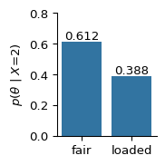

Suppose your brother has a coin which you know to be loaded so that it comes up heads 70% of the time. He then comes to you with some coin, you’re not sure which one and he wants to make a bet with you that it’s going to come up heads. You’re not sure of it’s the loaded coin or if it’s just a fair one.
Therefore he gives you a chance to flip it five times and just check it out. You flip it five times and you get two heads and three tails. Now you have to make a decision. Which coin do you think it is and how sure are you about that?
We start by defining the unknown parameter \(\theta\), that is either the coin is fair or it’s loaded.
The data likelihood follow a binomial distribution, so we can write: \[
\begin{align}
\theta &\in \left\{\mathrm{fair}, \mathrm{loaded} \right\} \\
X &\sim \mbox{Bin}(5, p) \\
\Rightarrow p(x \mid \theta) &= \begin{cases}
\binom{5}{x} \left(\frac{1}{2}\right)^{5} & \text{if }\theta \text{ is fair} \\
\binom{5}{x} (0.7)^{x} (0.3)^{5-x} & \text{if }\theta \text{ is loaded} \\
\end{cases} \\
&= \binom{5}{x} \left(\frac{1}{2}\right)^{5} \mathbb{I}_{\left\{\theta=\text{fair}\right\}} + \binom{5}{x} (0.7)^{x} (0.3)^{5-x} \mathbb{I}_{\left\{\theta=\text{loaded}\right\}}
\end{align}
\]
In this case we have observed \(x = 2\), so what is the likelihood: \[
p(\theta \mid X=2) = \begin{cases}
\binom{5}{2} \left(\frac{1}{2}\right)^{5} & \text{if }\theta \text{ is fair} \\
\binom{5}{2} (0.7)^{2} (0.3)^{5-2} & \text{if }\theta \text{ is loaded} \\
\end{cases}
\]
Code
import numpy as npimport matplotlib.pyplot as pltimport scipy.statsimport seaborn as snslls = [ scipy.stats.binom.pmf(k=2, n=5, p=0.5), scipy.stats.binom.pmf(k=2, n=5, p=0.7)]fig, ax = plt.subplots(figsize=(2, 2))sns.barplot(x=np.array([0, 1]), y=lls)for container in ax.containers: ax.bar_label(container, fmt="%.3f")ax.set_xticklabels(["fair", "loaded"])ax.set_ylabel(f"$p$($\\theta$ | $X$=2)")ax.set_ylim((0, 0.5))ax.spines[["top", "right"]].set_visible(False)plt.tight_layout()plt.show()
/tmp/ipykernel_43757/2665880107.py:15: UserWarning: set_ticklabels() should only be used with a fixed number of ticks, i.e. after set_ticks() or using a FixedLocator.
ax.set_xticklabels(["fair", "loaded"])
Figure 4.1: The likelihood of observing two heads in five coin flips for the fair and loaded coin.
This point estimate is great, but how sure are we? That is not an easy question to answer in the frequentist paradigm. We also might like to know the probability that the coin is fair, given that we observed two heads. In the frequentist paradigm, the coin is a physical quantity. It’s a fixed coin, and therefore it has a fixed probability of coming up heads. That probability is either 0 or 1.
4.2 Bayesian inference
With the Bayesian approach, you can easily incorporate previous knowledge. For example, since we know our brother pretty well, we have a prior belief of 60% that he’s brought the loaded coin. We can then used Bayes’ theorem to compute the posterior probability: \[
\begin{align}
p(\theta \mid x) &= p(x \mid \theta)\ p(\theta) / \sum_{\theta}p(x \mid \theta)\ p(\theta) \\
&= \frac{\binom{5}{x} \left[ \left(\frac{1}{2}\right)^{5} (0.4) \mathbb{I}_{\left\{\theta=\mathrm{fair} \right\}} + \left(0.7\right)^{x} \left(0.3\right)^{5-x} (0.6) \mathbb{I}_{\left\{\theta=\mathrm{loaded} \right\}} \right]}{\binom{5}{x} \left[ \left(\frac{1}{2}\right)^{5} (0.4) + \left(0.7\right)^{x} \left(0.3\right)^{5-x} (0.6) \right]}
\end{align}
\]
Code
prior_ = np.array([0.4, 0.6]) # prior probability for thetaprobs_ = np.array([0.5, 0.7]) # probability of heads for both cases# Compute the posterior probabilityposterior_ = np.asarray([ scipy.stats.binom.pmf(k=2, n=5, p=p) * p0for p, p0 inzip(probs_, prior_)])posterior_ /= np.sum(posterior_)fig, ax = plt.subplots(figsize=(2, 2))sns.barplot(x=np.array([0, 1]), y=posterior_)for container in ax.containers: ax.bar_label(container, fmt="%.3f")ax.set_xticklabels(["fair", "loaded"])ax.set_ylabel(f"$p$($\\theta$ | $X$=2)")ax.set_ylim((0, 0.8))ax.spines[["top", "right"]].set_visible(False)plt.tight_layout()plt.show()
/tmp/ipykernel_43757/2217390571.py:15: UserWarning: set_ticklabels() should only be used with a fixed number of ticks, i.e. after set_ticks() or using a FixedLocator.
ax.set_xticklabels(["fair", "loaded"])

So our posterior probability that this is the loaded coin works out to be 0.388. Isn’t that a much more satisfying answer? Under the Bayesian approach, we get a probability, and we can actually interpret this probability.
We can also examine what would happen under different choices of prior. We did this calculation with the prior probability of 0.6 for the coin being loaded, but we might have a different idea and want to use a different probability. We can use anything between zero and one.
Code
# prior_ = np.array([0.4, 0.6]) # prior probability for thetaprobs_ = np.array([0.5, 0.7]) # probability of heads for both casesfig, axs = plt.subplots(1, 3, figsize=(6, 2), sharey=True)for ax, x inzip(axs, [0.3, 0.6, 0.9]): prior_ = np.array([1- x, x]) posterior_ = np.asarray([ scipy.stats.binom.pmf(k=2, n=5, p=p) * p0for p, p0 inzip(probs_, prior_) ]) posterior_ /= np.sum(posterior_) sns.barplot(x=np.array([0, 1]), y=posterior_, ax=ax)for container in ax.containers: ax.bar_label(container, fmt="%.3f") ax.set_title(f"$p$($\\theta$)={x}", fontsize=10) ax.set_xticks([0, 1]) ax.set_xticklabels(["fair", "loaded"]) ax.spines[["top", "right"]].set_visible(False)axs[0].set_ylabel(f"$p$($\\theta$ | $X$=2)")axs[0].set_ylim((0, 1.0))plt.tight_layout()plt.show()
We can look at prior and posterior interval estimates. Under the prior we have: \[
\begin{align}
\mbox{Pr}(0.025 \le \theta \le 0.975) &= 0.95 \\
\mbox{Pr}(\theta > 0.05) &= 0.95 \\
\end{align}
\]
We can also ask what is an interval that contains 95% of the posterior probability?
There are two main types of intervals that are of interest in the Bayesian paradigm:
1. equal-tailed intervals
2. highest posterior density intervals
4.3.1 Equal-tailed intervals
We put an equal amount of probability in each tail. Thus, to make a 95% interval we put 0.025 in each tail. \[
\begin{align}
p(\theta < q \mid Y=1) &= \int_{0}^{q} 2 \theta\ \mathrm{d}\theta = q^{2} \\
p(\sqrt{0.025} \le \theta \le \sqrt{0.975}) &= 0.95
\end{align}
\]
4.3.2 Highest-posterior density (HPD)
Where in the density is it hightest? \[
p(\theta > \sqrt{0.05} \mid Y=1) = p(\theta > 0.224 \mid Y=1) = 0.95
\]